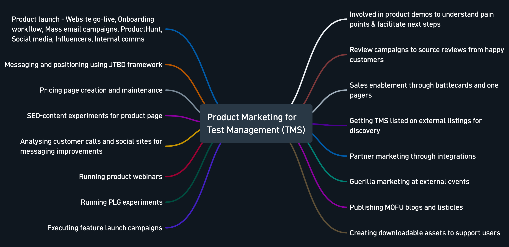
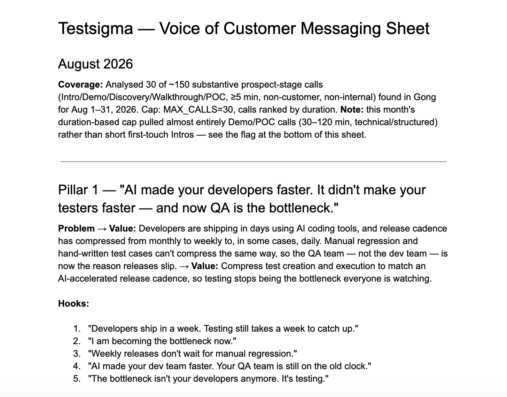
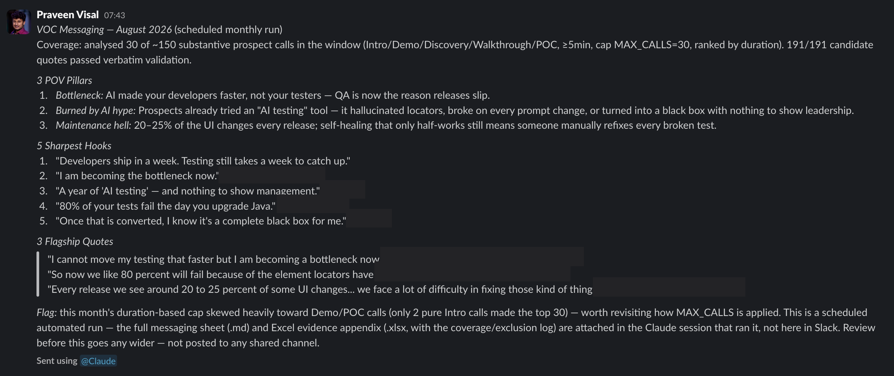
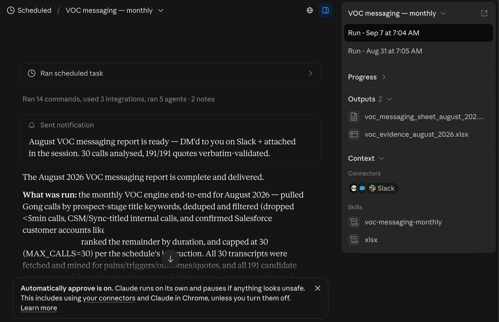
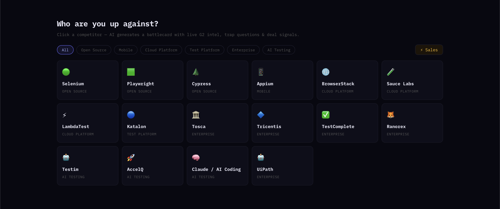
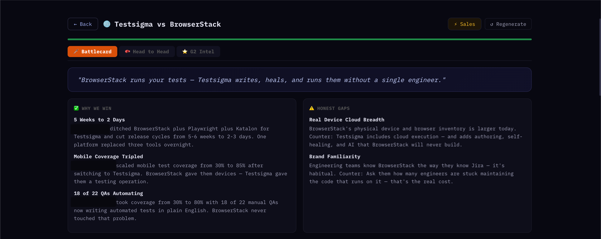
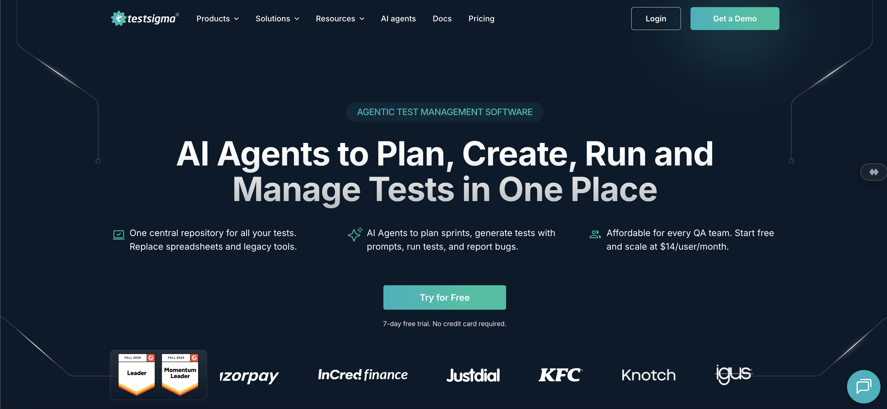
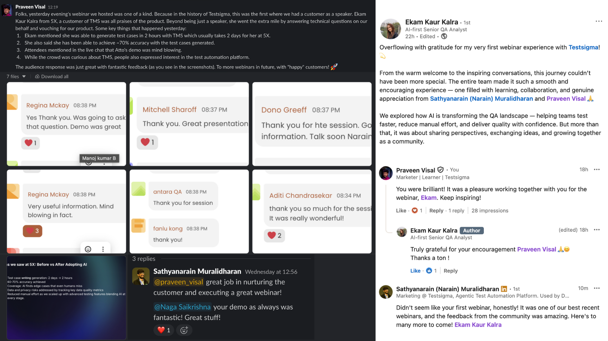
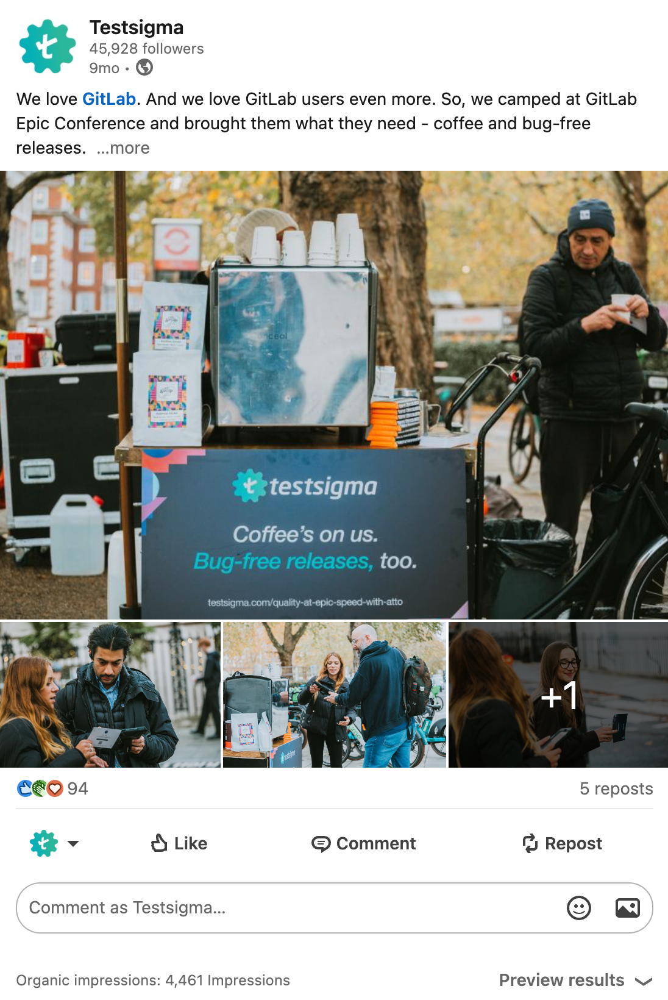

Sole PMM for a new product, from launch to its first enterprise deal.
#1ranking in India for "test management software," traced directly to that first enterprise deal.
The full scope of the role
Everything below happened. This case study only covers the highlights. Click to see it full size.

Thrown in solo
When Testsigma launched Test Management (TMS), there was no dedicated product marketer for it. I took on the function alone, on top of my existing growth remit. Messaging, positioning, paid ads, sales enablement, guerrilla event marketing: all of it, from scratch, with no playbook to inherit.
The JTBD Framework Behind TMS Messaging
Before writing a word of hero copy, I mapped the actual jobs buyers were hiring TMS to do.
→
A recurring voice-of-customer engine
Not everything in this stretch was specific to the TMS launch. This is the one exception: a system that turns real prospect conversations into messaging on an ongoing monthly cycle, and it's still running today, regardless of what's launching next.
3
POV pillars, every month
15
verbatim-validated quotes per cycle
Monthly
not a one-time research sprint
The Monthly VOC Messaging Engine
Runs on its own every month. Turns real prospect calls into messaging built from their own words, not a guess at them.
→
Body of work
The Monthly VOC Messaging Engine
A standing system, not a project with an end date. It runs every month without me having to remember to run it.
The input
That month's real prospect calls, not a sample
Pulls the month's prospect intro and discovery calls directly from Gong
Filters down to substantive, real conversations, skips short calls and no-shows that would just add noise
The extraction
Pains and triggers, in the prospect's own words
Surfaces recurring pain points, buying triggers, and must-have outcomes across that month's calls
Pulls 15 verbatim prospect quotes per cycle, verbatim-validated so it's never a paraphrase standing in for what someone actually said
The synthesis
Raw signal turned into usable messaging
Synthesizes 3 POV pillars for the month, each with its own problem-to-value ladder
Writes 5 hook headlines per pillar, in language pulled directly from the calls, not invented afterward
The output
A one-pager, not a research deck no one reads
Delivered as a markdown one-pager, an Excel evidence appendix tracing every claim back to an actual quote, and a Slack-ready summary
Comes to me for review first, before anything goes out to the wider team

One pillar from an actual month's output: problem, value, and the hooks pulled straight from it.

The monthly summary, delivered to Slack automatically. (Prospect names and companies redacted.)

The scheduled run itself: Gong and Salesforce connected, output files generated automatically. (Customer account names redacted.)
A live battlecard generator for competitive deals
Sales enablement for competitive deals usually means a static PDF that goes stale the week it's published. I built a tool that generates a full battlecard on demand, pulling live G2 intelligence for whichever competitor a rep is actually up against that week, instead of whatever the last update cycle happened to cover.
The Battlecard Generator
Pick any competitor. Get a positioning line, real proof points, and the honest gaps, generated live, not written once and left to rot.
→
Body of work
The Battlecard Generator
Built so a rep gets a real answer to "who are we up against" in seconds, not whatever static doc someone last updated.
The input
Any competitor, sorted by category
17 competitors across open source, cloud platform, enterprise, and AI-native testing tools, so a rep picks the actual competitor in the deal, not a generic one
Pulls live G2 intelligence rather than a pre-written comparison someone typed up once
The output
A positioning line, then the actual proof
Leads with a single sharp positioning line, then backs it with real customer wins, real numbers, not generic feature claims
Three tabs per competitor: the battlecard itself, a head-to-head feature view, and the underlying G2 intel it was generated from
The honesty
An "Honest Gaps" section, on purpose
Every battlecard names where the competitor is genuinely stronger, not just where we win
Each gap comes with an actual counter a rep can use, not an instruction to change the subject

Pick a competitor by category, sales gets a battlecard built for the deal in front of them.

A generated battlecard: real wins with real numbers, and the gaps stated plainly rather than hidden. (Customer names redacted.)
The SEO play
One of the first priorities was visibility. I ran an SEO and content play on the TMS product page targeting "test management software," a competitive, high-intent keyword with established players already ranking. The page reached #1 in India and #4 in the US, and has held top-3 a year later.
Two more wins came out of the same stretch: a trial-length change that reshaped the top of the funnel, and Testsigma's highest-registered webinar to date (700+ registrations), built entirely from scratch with no existing webinar program to lean on.
Cutting the Trial From 21 Days to 7
Longer trials don't convert better, they just give people more runway to put off deciding. New paying customers tripled.
→
Body of work
Cutting the Trial From 21 Days to 7
A call made on a read of user behavior, not a formal split test. Worth showing the reasoning and being straight about what the method was and wasn't.
The setup
21 days by default, not by design
TMS inherited the standard 21-day trial window used across Testsigma's other products
No one had specifically decided that window fit this product's buying cycle, it was just the default
The hypothesis
Runway isn't the same as conviction
In a self-serve trial, more days doesn't reliably mean more confidence in the product
It often just means more room to postpone a decision that could've been made in week one
The change
A straight cutover, not a controlled test
Cut the default trial window from 21 days to 7 for all new TMS trials
This was a before/after cutover, not an A/B split. Saying that plainly rather than dressing it up as more rigorous than it was
The result
New paying customers tripled
Comparing the period before the change to the period after, paying customer conversions roughly 3x'd
Worth flagging
Correlation, not an isolated variable
Because it wasn't a controlled split, I can't fully rule out other things moving in the same window
What I can say: it's the largest before/after swing I've seen from a single lever on this product, and it's the kind of result that makes the case for actually running it as a proper split next time
Body of work
The JTBD Framework Behind TMS Messaging
Before writing a word of hero copy, I ran a Jobs-to-be-Done process to find out what buyers were actually hiring a test management tool to do. Here's the full process behind that.
Step 1
Gather raw signal from two different sources
Discovery-call transcripts from the sales team
Public forum threads (Reddit, review sites) where people described frustrations unprompted
Two sources matter: a customer talking to sales and a stranger venting online have different incentives to shade the truth
Step 2
Find the pattern, not the anecdote
One complaint isn't a job, it's one data point
Read across dozens of conversations for the same underlying need showing up in different words
"Scattered tools" and "too many places to look" get grouped as one job, not counted as two
Step 3
Write it as a job, not a feature request
Each pattern rewritten as: the job, the pain stopping it, the outcome that counts as success
Example: the job wasn't "give me a test tool," it was "give me one place, and let me bring what I already have without losing it"
That distinction, job versus feature, is the whole point of the format
Step 4
Prioritize by repetition, not by what sounds compelling
Ranked jobs by how often they actually showed up, not by which felt most interesting to write about
Resisted leading with the cleverest insight instead of the most common one
What shipped
Where this actually landed
The two most repeated jobs: wanting one place instead of scattered tools, and wanting AI to absorb the busywork of writing and running tests
Became "one place" and "AI Agents," the two ideas doing the most work in the final hero copy

Where the process actually landed: "AI Agents" and "in One Place," live on the page today.
Testsigma's TMS page ranking #1 for "test management software": the search that mattered most for this launch.
That ranking translated directly into TMS's first enterprise deal, the first proof this new product could win in the enterprise segment and not stay confined to SMB.
Turning a review into a stage
I ran a G2 review campaign targeting our most active power users. One of those reviews came from a customer who liked the product enough to say yes to something bigger: becoming Testsigma's first-ever customer-as-speaker on a webinar. Getting a customer to describe your product in their own words, live, to a room of prospects, is worth more than anything I could write for them.
The G2 review outreach that started the relationship. (Customer name redacted.)

The customer-as-speaker webinar that followed, and her own LinkedIn post about it afterward.
Building a partner channel from scratch
I initiated the partner marketing conversation with Linear directly. Built the Test Management by Testsigma integration page to their submission template and requirements, produced the embedded explainer video myself, and got it published on Linear's live integrations directory as a recognized partner.
It's already paying off as a trust signal: in at least one enterprise sales conversation, Linear's own team referenced Testsigma directly when advising a prospect on tooling options. That's what a partner directory is actually for: a channel other companies' sales teams point their own customers toward, a different kind of validation than anything I could write myself.
The Test Management by Testsigma integration, live on Linear's own site.
"I had the opportunity to work with Praveen on the couple of website product pages and content initiatives that gained visibility in AI/Answer Engine results. He has a strong growth marketing mindset with excellent expertise in CRO and content optimization. His ability to connect user behavior, content, and business goals really stands out."
Prasanna Kumar TotakuraSenior SEO Analyst. Worked with Praveen on the same team
More from the same launch
Guerrilla marketing outside GitLab's Epic Conference: a coffee cart with a Testsigma banner, handed out at the venue, to build brand visibility with exactly the audience most likely to need TMS.

The actual setup outside GitLab's Epic Conference.
Ready on day oneRevamped the pricing page to a multi-product model before TMS launched, not scrambled together after.